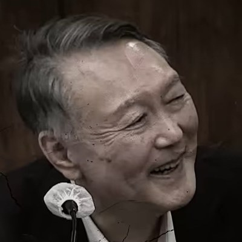
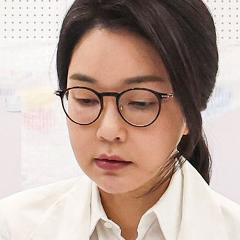

2024년 12월 3일 밤 10시 27분,
비상계엄이 선포됐다.
그 뒤로 흐른 시간만큼, 법정은 어디까지 왔을까. 내란·김건희·해병대·종합 네 특검이 법정에 세운 사람들의 1심, 2심, 대법원 판단을 한 장에 모았다.
네 특검 · 피고인 165명 · 1심부터 대법원까지
724일
오늘까지 선고 103번이 있었고, 30건의 형이 확정됐다.
앞으로 13번의 선고가 남아 있다.
그 뒤로 흐른 시간만큼, 법정은 어디까지 왔을까. 내란·김건희·해병대·종합 네 특검이 법정에 세운 사람들의 1심, 2심, 대법원 판단을 한 장에 모았다.

전 대통령
내란 우두머리 1심 무기징역
체포방해 징역 7년 확정
무상 여론조사 · 호주대사 출국 · 수사 외압 외 2건

윤석열 전 대통령 배우자
3대 의혹 징역 4년 확정
매관매직 대법원 선고 앞둠